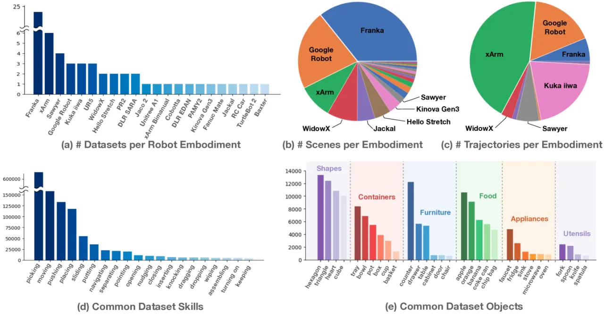
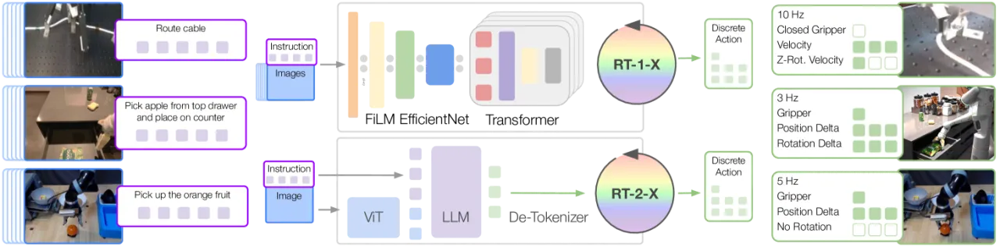
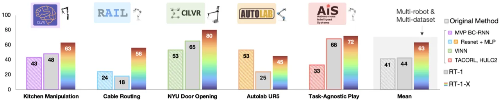
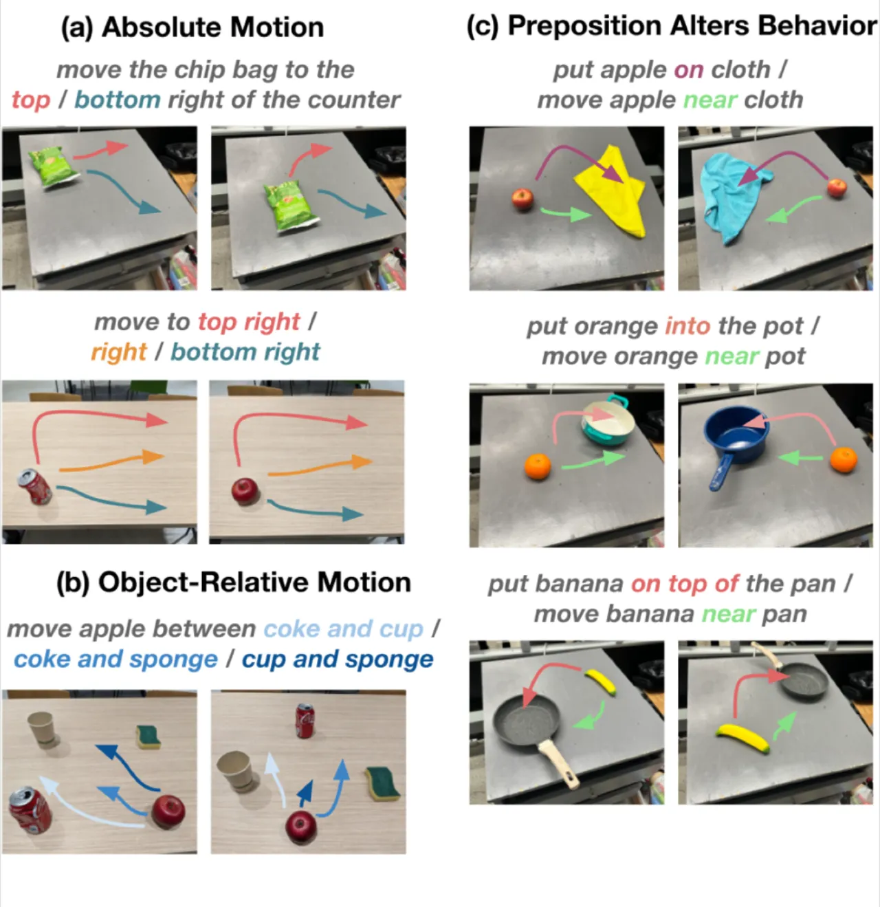

机器人学习长期受限于单一机器人、单一场景的小规模数据集。该工作汇聚来自21个机构、22种机器人的60个数据集（超过100万条真实轨迹），构建 Open X-Embodiment (OXE) 数据集，并在其上训练 RT-1-X 和 RT-2-X 两个模型，验证了跨机器人的正向迁移效果，其中 RT-2-X 在泛化任务上相比单一机器人训练取得约3倍提升。
NLP 和计算机视觉领域通过在大规模、多样化数据集上预训练，实现了显著的泛化能力。而机器人学习领域仍停滞于"各自为政"的小规模数据集——每个实验室只训练自己机器人上的任务，无法从他人数据中受益。核心问题是：机器人学习能否像 NLP 一样，围绕通用模型整合，从而实现正向迁移？
"Robotic learning datasets are often still narrow along some axes of variation, either focusing on a single environment, a single set of objects, or a narrow range of tasks."

该工作提出两个核心贡献：(1) 构建 Open X-Embodiment (OXE) 数据集，将60个异构机器人数据集统一转换为 RLDS 格式；(2) 在 OXE 上训练 RT-1-X 和 RT-2-X 两个模型，分别代表中等容量专用网络和大容量 vision-language-action 模型。

所有60个数据集统一转换为 RLDS（serialized tfrecord）格式。数据来自21个机构，涵盖22种机器人平台，包含160,266个任务、527种技能，超过100万条真实机器人轨迹。各数据集按比例混合（混合权重基于数据集规模和质量评估），以避免大数据集完全主导训练。
在6种机器人上共评估3,600次试验，涵盖小规模和大规模数据集场景，同时评估 RT-2-X 的 emergent skills（跨机器人平台迁移能力）和泛化能力。
| 评估域 | Original Method | RT-1 | RT-1-X | RT-2-X (55B) |
|---|---|---|---|---|
| Bridge (WidowX) | 13% | 40% | 27% | 50% |
| RT-1 Paper Domain | 13% | 30% | 27% | 30% |
| Google Robot | — | 92% | 73% | 91% |
小规模数据集场景中，RT-1-X 相比原始方法或单机器人 RT-1 基线取得 50% 更高的平均成功率。大规模数据集场景下，RT-1-X 出现欠拟合（underfitting），而高容量的 RT-2-X (55B) 能有效学习并优于基线。

在 Google Robot 上执行来自 Bridge 数据集（WidowX 机器人）的任务，用于评估跨机器人平台的技能迁移能力：

| 配置 | 模型规模 | Web 预训练 | Emergent Skills | 泛化能力 |
|---|---|---|---|---|
| RT-2（单机器人） | 55B | ✓ | 27.3% | 62% |
| RT-2-X（完整） | 55B | ✓ | 75.8% | 61% |
| RT-2-X（去除 Bridge） | 55B | ✓ | 42.8% | 54% |
| RT-2-X（5B） | 5B | ✓ | 44.4% | 52% |
| RT-2-X（5B，无图像历史） | 5B | ✓ | 14.5% | 30% |
| RT-2-X（5B，无 Web 预训练） | 5B | ✗ | 0% | 1% |
消融实验揭示三个关键因素：(1) Web 预训练至关重要——去除后 emergent skills 从44.4%骤降至0%；(2) 模型容量影响迁移效果——55B vs 5B 在 emergent skills 上相差约31个百分点（75.8% vs 44.4%）；(3) 图像历史帮助性能——去除后 emergent skills 下降约30个百分点。
论文原文："Our experiments do not consider robots with very different sensing and actuation modalities." 当前实验主要集中在使用相机视觉输入和标准末端执行器的机械臂，未探索触觉传感、力传感器、腿式机器人等差异更大的模态。
论文原文："They do not study generalization to new robots, and provide a decision criterion for when positive transfer does or does not happen." 所有评估机器人均在训练阶段出现过，未测试能否将策略迁移到从未见过的机器人平台。
RT-1-X（35M参数）在大规模数据集场景下出现欠拟合现象，无法充分利用 OXE 数据的多样性。需要更高容量的模型（如 RT-2-X 55B）才能有效实现正向迁移，这对计算资源提出了较高要求。
论文原文提到该工作未能提供一个明确的判断准则来预测何时会发生正向迁移、何时会出现负向迁移，这一理论问题留待未来工作解决。